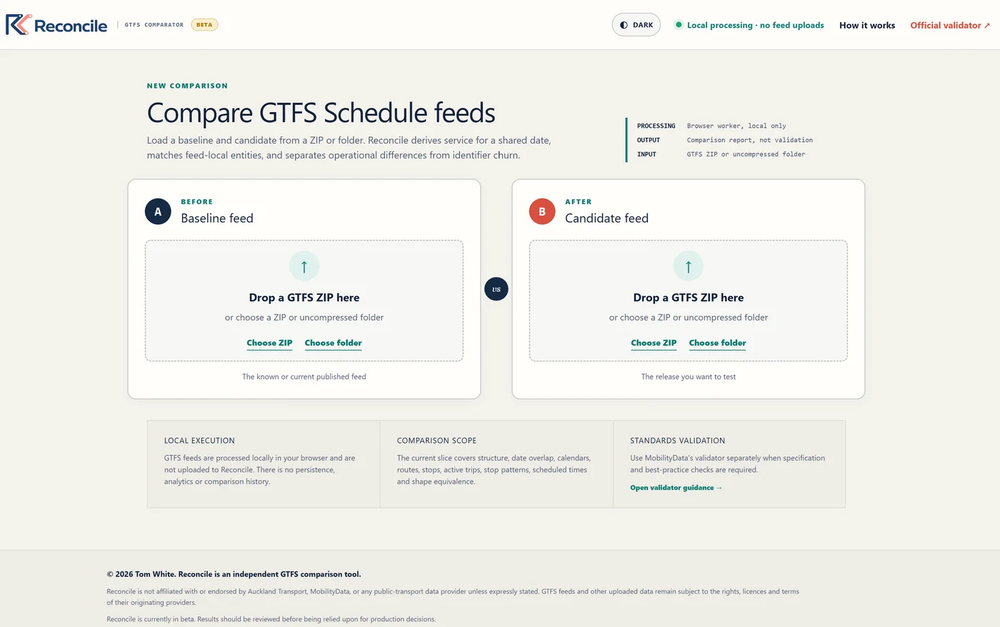
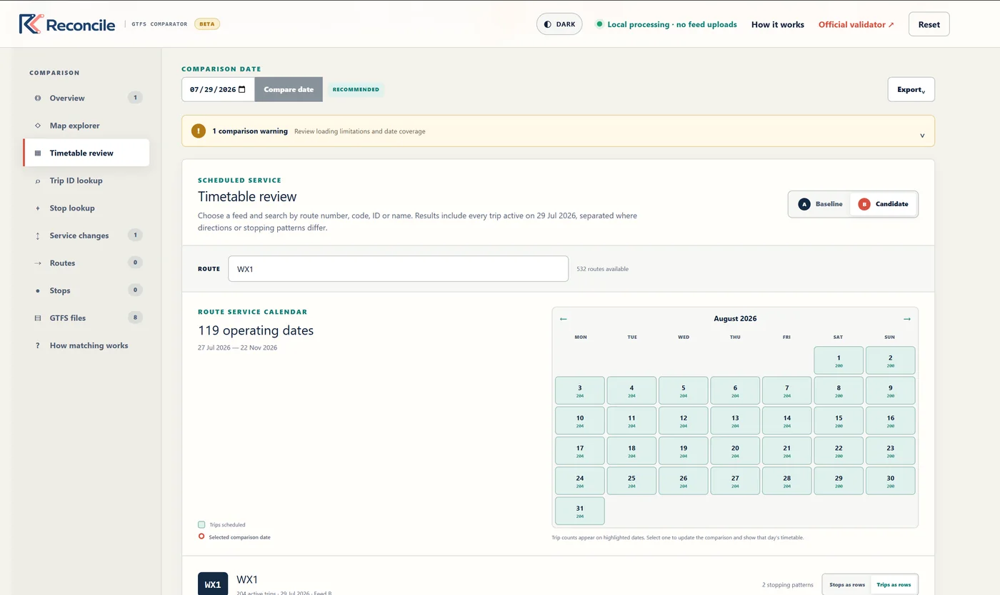
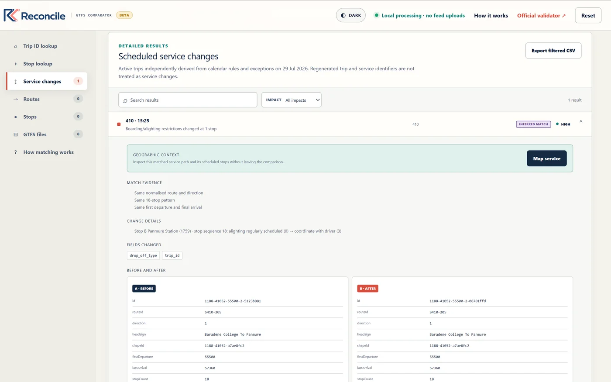
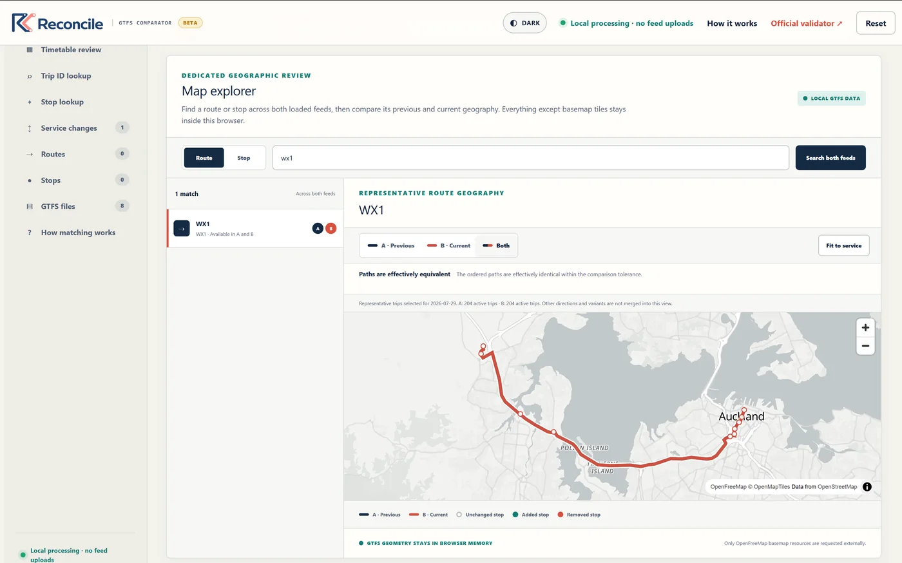
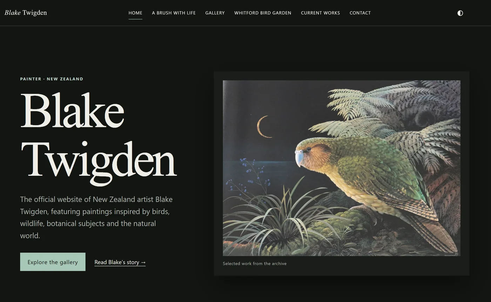
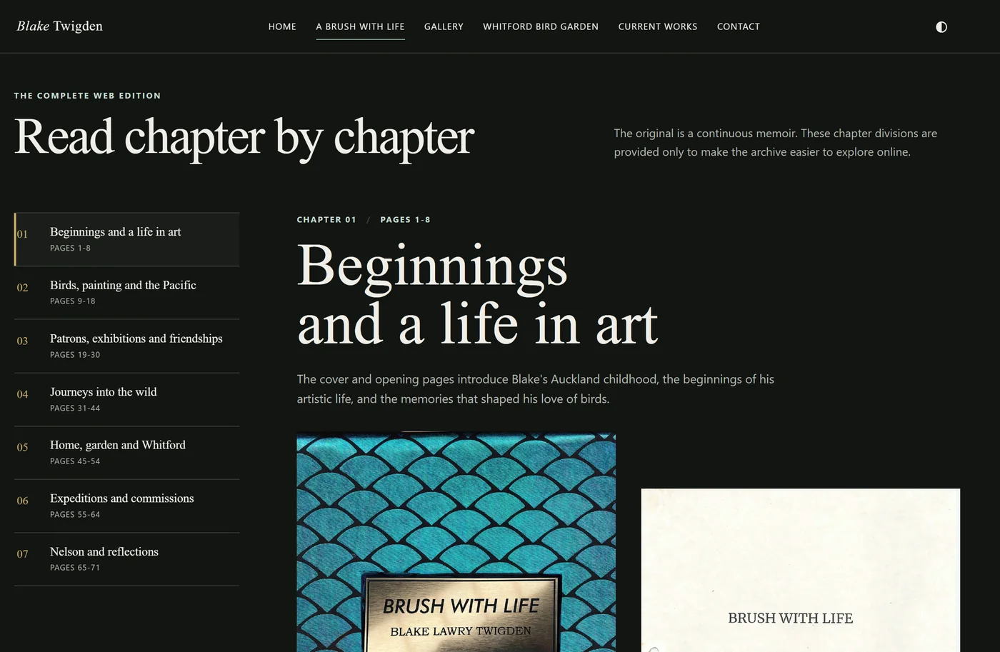
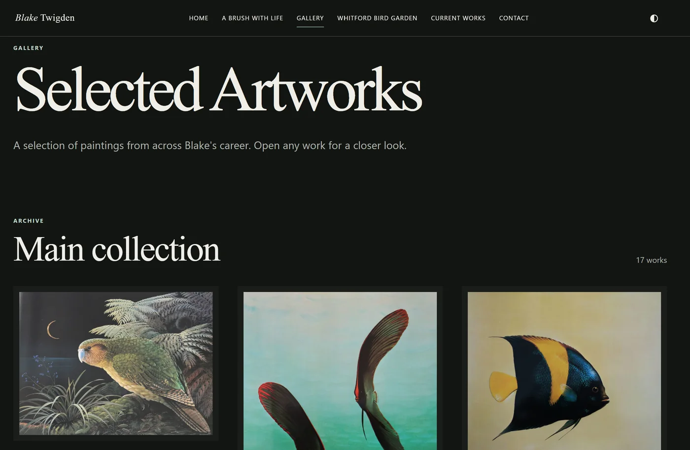
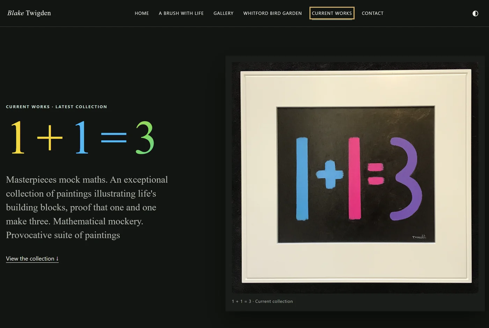

01
Production-facing change
Own and coordinate the end-to-end change process for monthly timetable and network releases, from small metadata corrections to changes affecting large parts of Auckland's public transport network.
Technical Business Analyst · Systems, data & delivery
I turn ambiguous operational problems into dependable technical outcomes.
At Auckland Transport, I work across public transport data, scheduling platforms, vendor delivery, testing, and release change. I am trusted to understand how changes move through connected systems, surface risk early, and coordinate the work needed to publish accurate customer information.
Alongside that role, I build practical products and automation that solve problems I understand first-hand. My next step is formal ownership across a platform, integration, solution, or technical implementation outcome - building on work I already do without overstating the title I hold today.
What I am already trusted to own
01
Own and coordinate the end-to-end change process for monthly timetable and network releases, from small metadata corrections to changes affecting large parts of Auckland's public transport network.
02
Work as a subject matter expert across GTFS schedule data and the IVU scheduling platform, validating changes and considering downstream use in AT Mobile, Google Maps, operational tools, and the enterprise data warehouse.
03
Identify repeatable operational problems, shape practical solutions, and build working tools - including automated GTFS preparation workflows and Reconcile, a deployed feed-comparison product.
From analysis into ownership
A technical and operational role centred on getting complex schedule data and network change safely through connected platforms and into the customer-facing information people rely on.
Produced customer-focused, SEO-aware content and supported web administration, analytics, and content maintenance for client sites.
Selected work
These projects show how I frame problems, make technical and product decisions, and stay accountable for whether the result works.
A browser-based workbench that helps reviewers distinguish meaningful timetable and network changes from the identifier and feed-window churn that makes raw file comparison misleading.
Problem
Two valid GTFS releases can look radically different even when the service passengers experience has barely changed. A naïve file diff creates noise rather than useful review evidence.
Why it mattered
Reviewers need to focus limited attention on real changes and understand why the tool believes two entities match before accepting a result.
My role
Identified the problem, defined the product, modelled the GTFS domain, made the product and technical trade-offs, and independently built, debugged, iterated, and deployed the working application using AI-assisted development.
Key decisions
Solution boundary and data flow
Parsing, matching, and classification stay inside the browser. A Web Worker separates the comparison engine from the interface, while searchable views and portable exports turn engine decisions into review evidence.
Trade-offs
Keeping data local improves privacy and removes a backend dependency. The trade-off is no server-side history; results must therefore be clear, self-contained, and exportable.
Validation and outcome
Large-feed processing, paginated results, match confidence, evidence views, and exports were designed as quality controls around the core comparison. The outcome is a deployed, coherent tool that turns a domain-specific review problem into an inspectable workflow.
What this demonstrates: product definition, systems thinking, domain modelling, explicit trade-offs, edge-case reasoning, and ownership through to a working outcome - not just the ability to write application code.
Selected interface views. Select any screenshot to open the full-size image.




A responsive digital gallery and web edition of an illustrated memoir, designed and shipped for New Zealand artist Blake Twigden.
Problem and role
Bring artwork, biography, current notices, Whitford Bird Garden history, and private enquiries into one coherent experience without letting the interface compete with the work. I shaped the site, content structure, interactions, and delivery end to end.
Key decisions
Used reusable content structures and an artwork-led visual hierarchy; designed keyboard-accessible gallery interactions and reduced-motion support; separated the secure enquiry workflow from browser code.
Quality and constraints
Balanced high-resolution visual material with responsive image delivery, page performance, SEO foundations, accessible full-screen viewing, and light/dark themes.
Outcome
Shipped the official six-page site, including structured metadata, canonical URLs, sitemap and robots directives, Cloudflare Turnstile, and a secure contact workflow.
What this demonstrates: independent product delivery, translating a loosely defined need into a usable system, and taking responsibility for content, interaction, accessibility, security, and release quality together.
Selected interface views. Select any screenshot to open the full-size image.




Earlier evidence
Explored a shared account's 2016-2020 usage in Python, then turned the findings into a written Power BI report and interactive visualisations.
Designed client-facing reporting and data-collection structures that turned operational observations into consistent evidence and concise recommendations.
Built a source-grounded assistant from ITIL training material, notes, and sample exams to generate practice questions, assess answers, and point back to supporting material.
A bounded example of using generative AI to improve a real workflow while preserving human review and source traceability.
Practical capability
Foundation and development
Auckland University of Technology · 2015
Double Major - Software Development and IT Service Science
ITIL Foundation - PeopleCert, 2026
Project Management Essentials (PMBOK) - Lumify, 2024
Data Analyst in Python / SQL - Dataquest, 2020
Ongoing self-directed development in AI, LLM workflows, automation, and modern digital delivery.